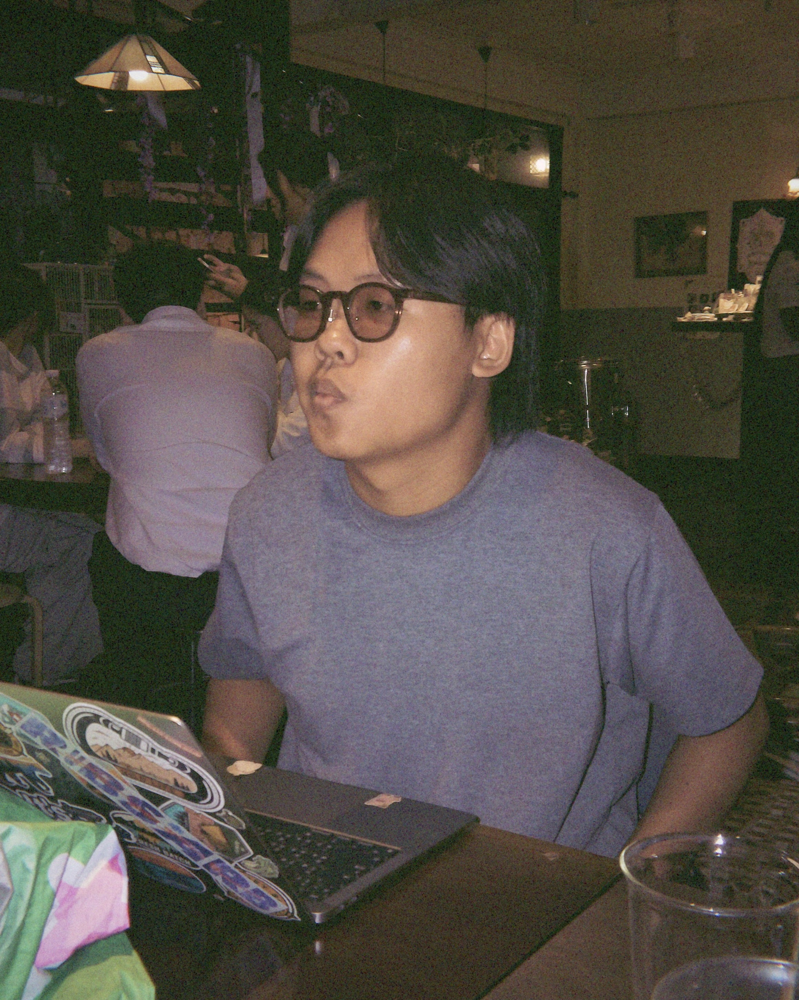

Final-year CS student building computer vision pipelines and full-stack platforms — from spinal X-ray segmentation to real-time surveillance systems.

I'm a final-year Computer Science student at Chulalongkorn University with hands-on experience building end-to-end AI and full-stack solutions — from computer vision pipelines for medical image segmentation to real-time surveillance platforms.
I like bridging AI models with robust web platforms: taking a detection or segmentation model from notebook to something deployed, monitored, and usable by people who aren't ML engineers.
CV pipeline classifying individual vertebrae (T1–L5) from X-rays, with CLAHE enhancement and Optuna-tuned models.
Full-stack platform with interactive detection zones drawn over live camera feeds, streamed via FFmpeg.
Human detection models deployed via Docker for CCTV monitoring, communicating in real time over MQTT.
Web app + scripted document automation streamlining interviews and sponsorship data collection for Hill Tribe Club.